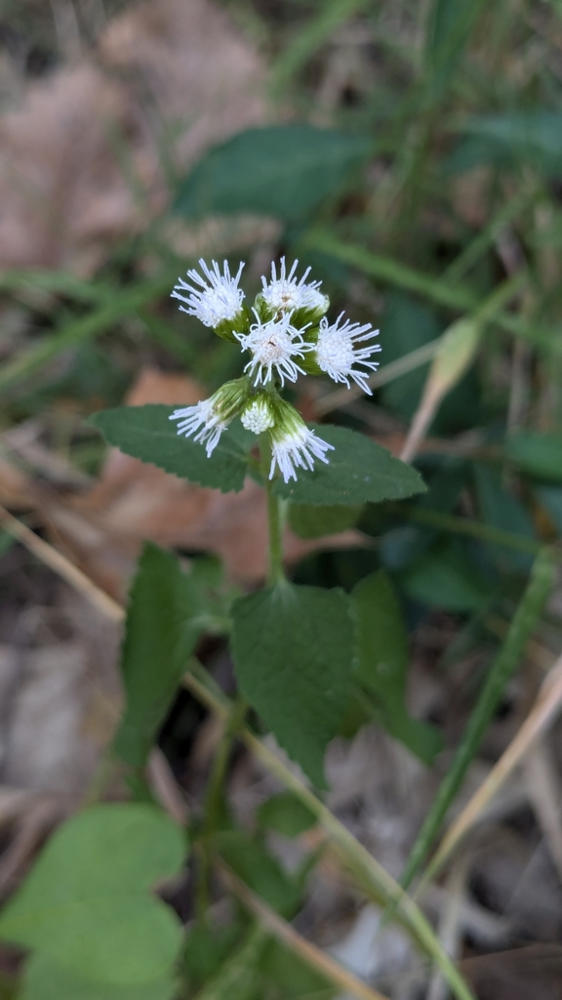
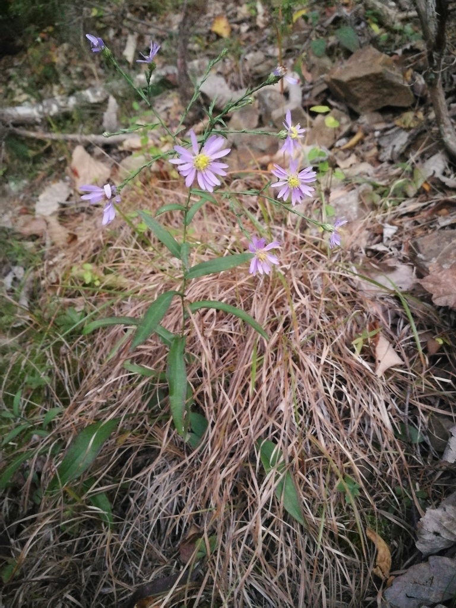
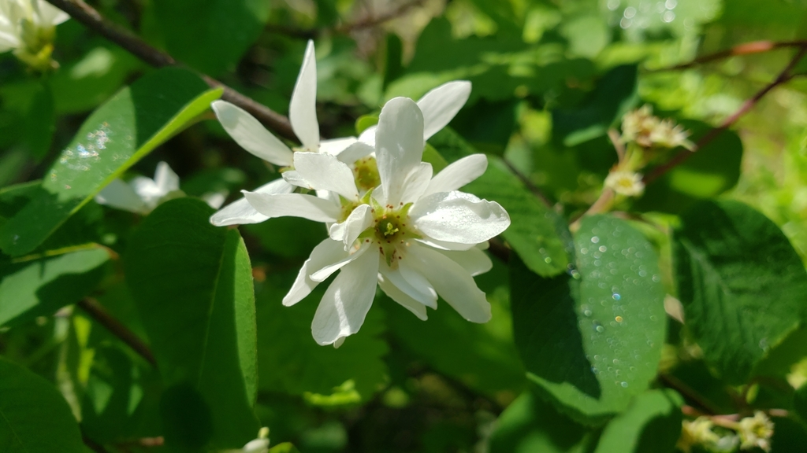
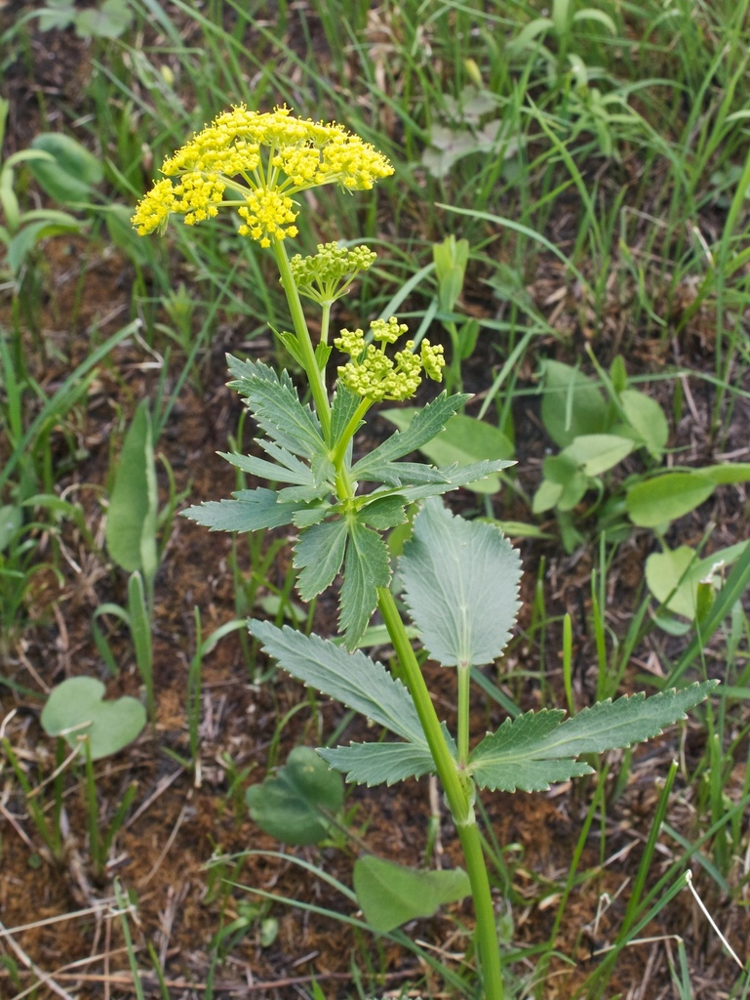
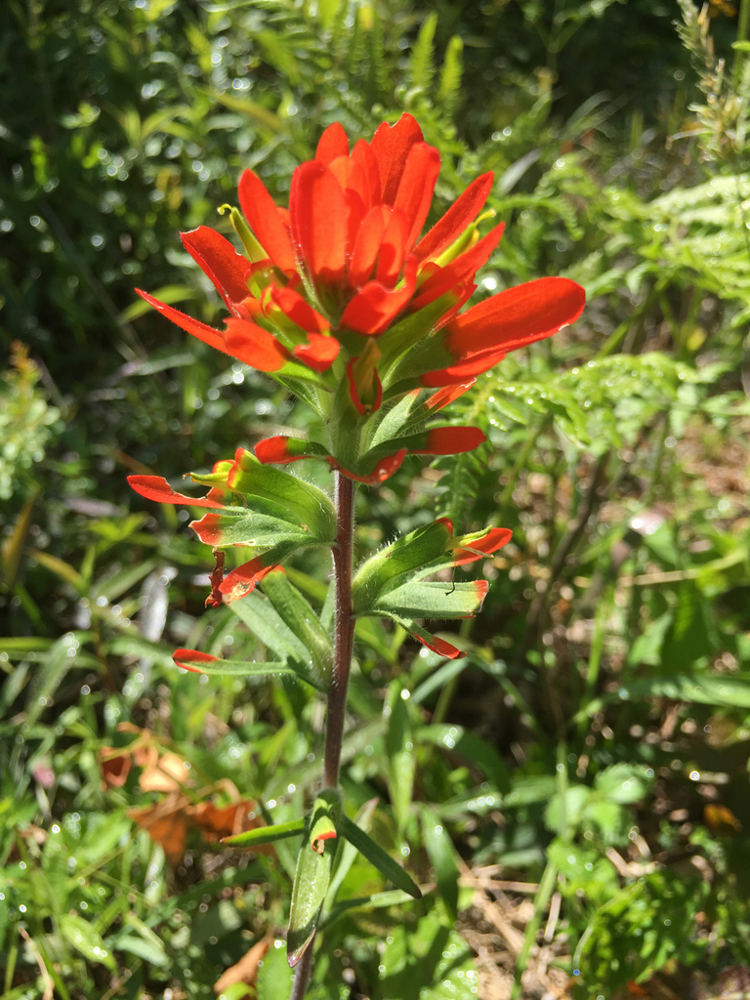
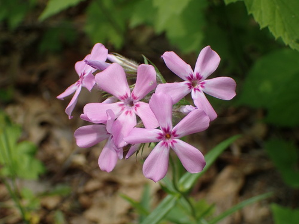
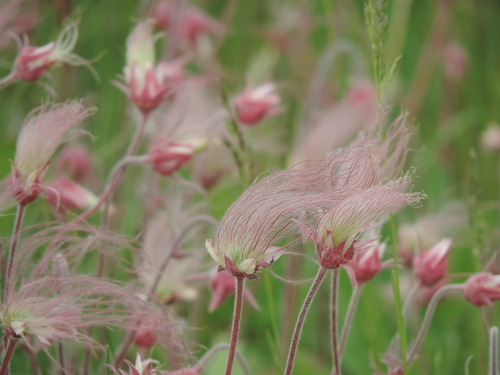
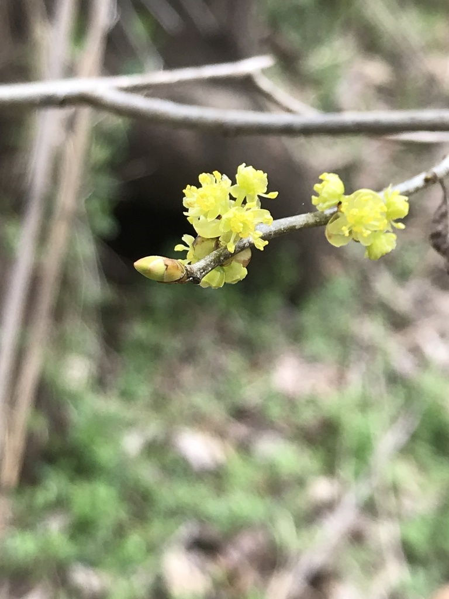
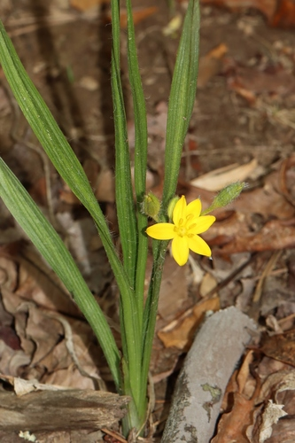

Extending the Bloom Season
The shoulders of the season are where most gardens fall short. Spring and fall are exactly when pollinators are most vulnerable — queen bumblebees emerging from hibernation with nothing stored, and late-season workers and migrating Monarchs trying to build reserves before frost. Filling those gaps is usually a better use of space than adding another midsummer bloomer to a bed that is already full of them. The two lists below cover both ends: species that flower before most gardens have woken up, and those still going when the rest has finished.
Late-Season Bloomers
18 plants

Biennial GauraGaura biennis

Blue MistflowerConoclinium coelestinum

Bottle GentianGentiana andrewsii

Cream GentianGentiana alba

False AsterBoltonia asteroides

New England AsterSymphyotrichum novae-angliae

New York AsterSymphyotrichum novi-belgii

Obedient PlantPhysostegia virginiana

Purple False FoxgloveAgalinis purpurea

Purple Love GrassEragrostis spectabilis

Sky Blue AsterSymphyotrichum oolentangiense

Slender-leaved False FoxgloveAgalinis tenuifolia

Smooth Blue AsterSymphyotrichum laeve

Smooth Yellow False FoxgloveAureolaria flava

SneezeweedHelenium autumnale

Swamp LousewortPedicularis lanceolata

Sweet Black-eyed SusanRudbeckia subtomentosa

Zig Zag GoldenrodSolidago flexicaulis
Early-Season Bloomers
16 plants

Allegheny ServiceberryAmelanchier laevis

Bishop's CapMitella diphylla

Early GoldenrodSolidago juncea

Eastern ServiceberryAmelanchier canadensis

Golden AlexandersZizia aurea

Indian PaintbrushCastilleja coccinea

Meadow Blue VioletViola sororia

Midland Shooting StarDodecatheon meadia

Prairie PhloxPhlox pilosa

Prairie SmokeGeum triflorum

Prairie WillowSalix humilis

Pussy WillowSalix discolor

SpicebushLindera benzoin

Sweet CicelyOsmorhiza claytonii

Wood BetonyPedicularis canadensis

Yellow Star GrassHypoxis hirsuta